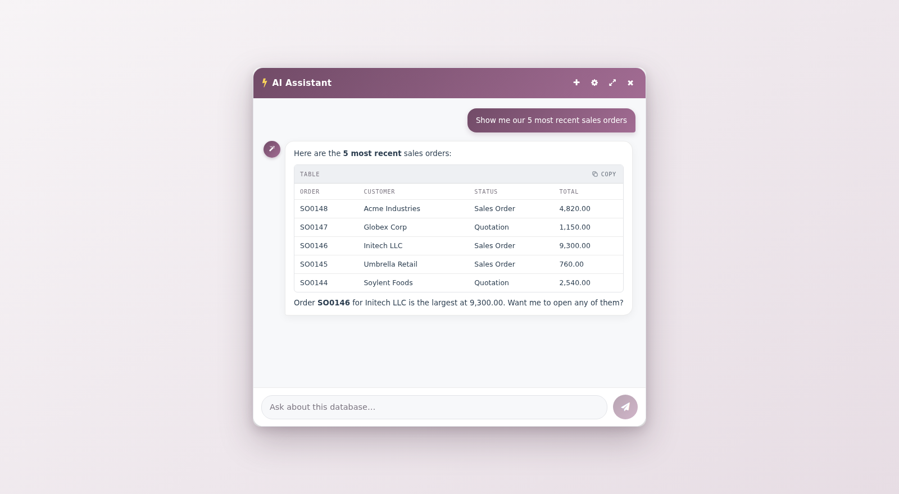
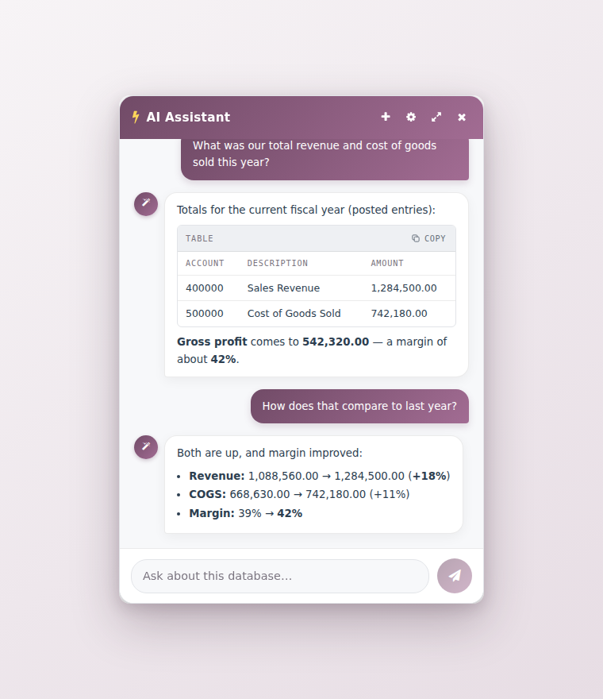
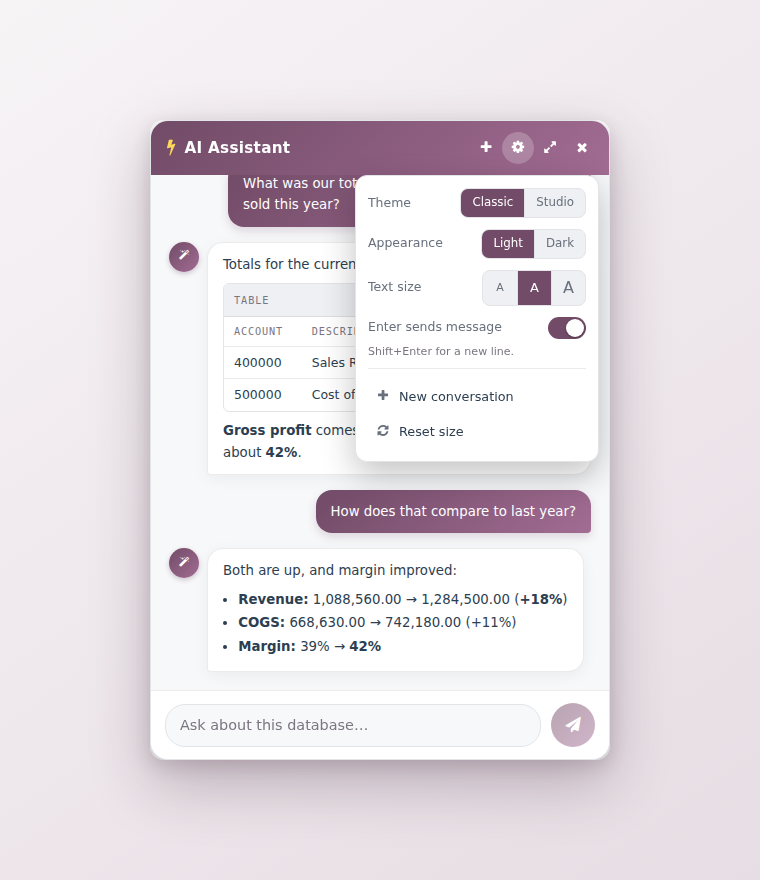
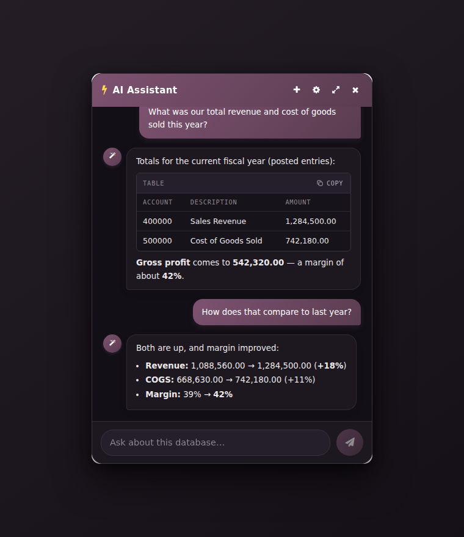

Ask your database anything. Get answers, totals, and actions — with your own AI.
Odoo 17 · 18 · 19 Community & Enterprise LGPL-3 · Free

An agentic assistant docked in the Odoo backend. It answers questions from your live database in plain language — and, with your confirmation, creates records, edits them, and runs workflow actions. Always as the logged-in user, always within Odoo's access rights.
Every create, update, delete and workflow action is proposed first and only runs after you explicitly confirm — the gate is enforced in code, not just the prompt. You see the exact records affected and a before/after preview before anything happens.
The assistant always acts as the logged-in user, so Odoo's own access rights and record rules apply on top. It can never do anything the user could not do by hand.
Bring your own key for OpenAI, Anthropic (Claude), Google Gemini, any OpenAI-compatible endpoint or Amazon Bedrock — or point it at a fully local / self-hosted server (Ollama, LM Studio, MLX) so your data never leaves your own infrastructure.
|
Answers from your data "How many contacts?", "5 most recent sale orders", plus sums, averages and margins computed in the database in one query — never by paging thousands of rows. |
Knows your screen "Confirm this order", "export these" — it resolves to the record you have open and respects the active list filters. |
|
Takes action, with confirmation Create & edit records, run workflow buttons (confirm / post / validate / cancel), schedule follow-up activities, translate fields. |
Documents & exports "PDF of this invoice", "give me these as CSV" — real downloadable files, respecting your access rights. |
|
Stock & availability "Can we ship 50 now?", "when does more arrive?" — on hand, reserved, free to ship, incoming receipts with dates. |
Finds what you mean Partial or misspelled names resolve to the right record instead of a false "not found"; reads a record's chatter history on request. |
|
 Totals in one query
|
 Simple settings
|
 Light & dark
|
Install the module, open Settings → AI Assistant, pick your provider and paste a key (or point it at your local server). That's it — the assistant appears in the systray, ready to chat.